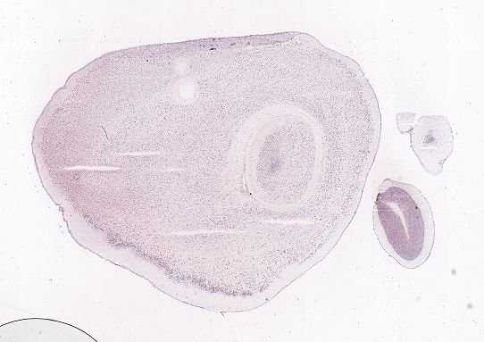
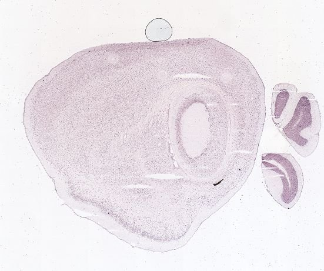
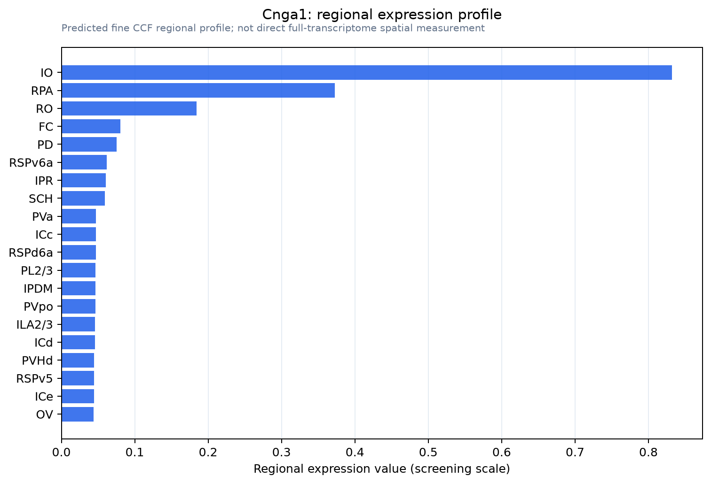

Cnga1
Cyclic nucleotide-gated channel alpha-1 (CNG channel alpha-1) (CNG-1) (CNG1) (Cyclic nucleotide-gated cation channel 1) (Cyclic nucleotide-gated channel, photoreceptor) (Rod photoreceptor cGMP-gated c
Spatial tier: STRICT_EXCLUSIVE · Class: ION_CHANNEL · Top region: IO (Inferior olivary complex) · Positive regions: 2/554
50.3Discovery Score
49.2Targetability Score
CEvidence grade C
What this means: Cnga1: predicted fine-region profile is strict-exclusive, with 2 positive regions out of 554 (limit 12); direct spatial validation is required.
Direct spatial evidence
MERFISH REGION LOCATOR

DIRECT ALLEN ISH

DIRECT ALLEN ISH

Regional expression figure

Predicted WMB × fine-CCF profile; not direct full-transcriptome spatial measurement.
Spatial profile
Evidence and specificity
- Evidence status
- PREDICTED_FINE
- Direct sources
- None; predicted localization only
- Exclusive threshold
- 12 positive regions out of 554
- Spatial specificity
- 0.516
- Top-region fraction
- 0.355
- Filter status
- PASS
Interpretation limits
- Cell-type-to-region projection is imputed expression, not direct spatial measurement.
- Adult reference atlases do not establish stability across age, sex, strain, state, or disease.
- Transcript abundance does not guarantee protein abundance or genetic-tool performance.